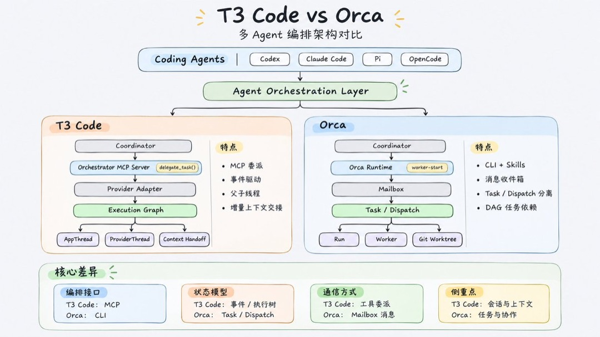
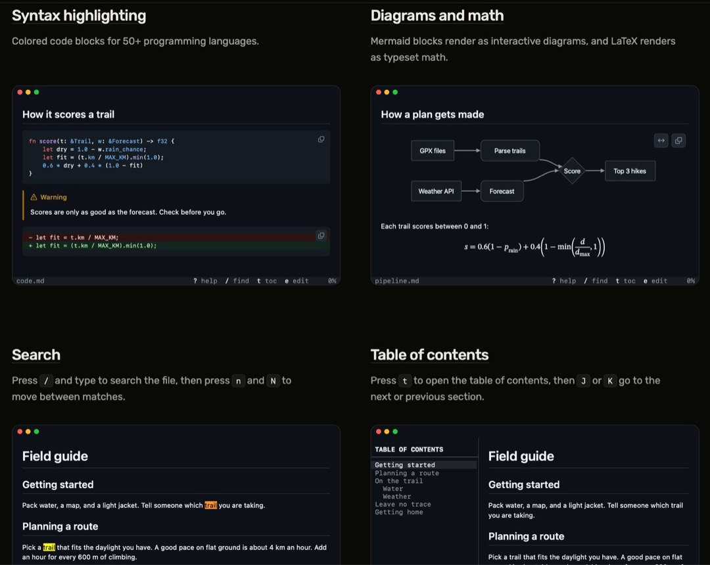
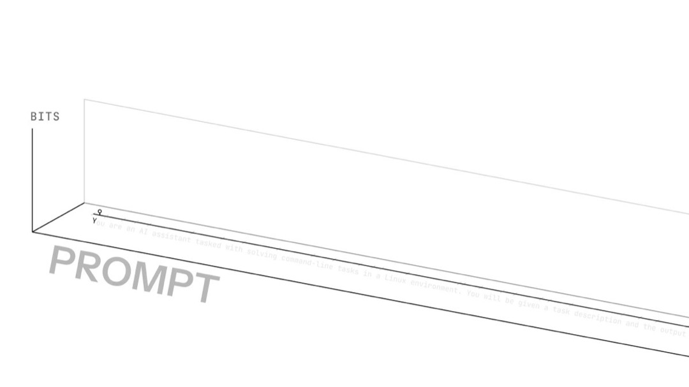
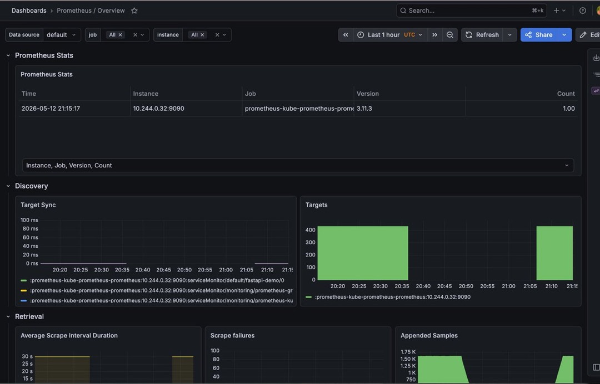
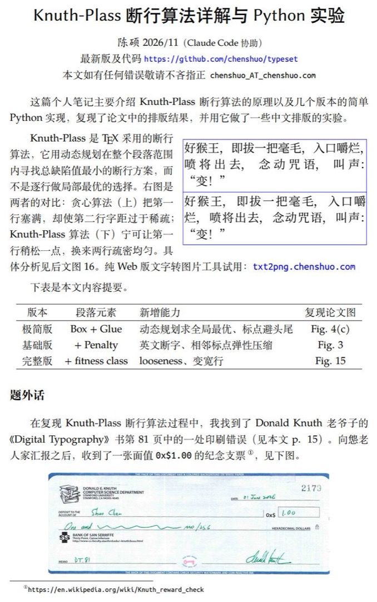
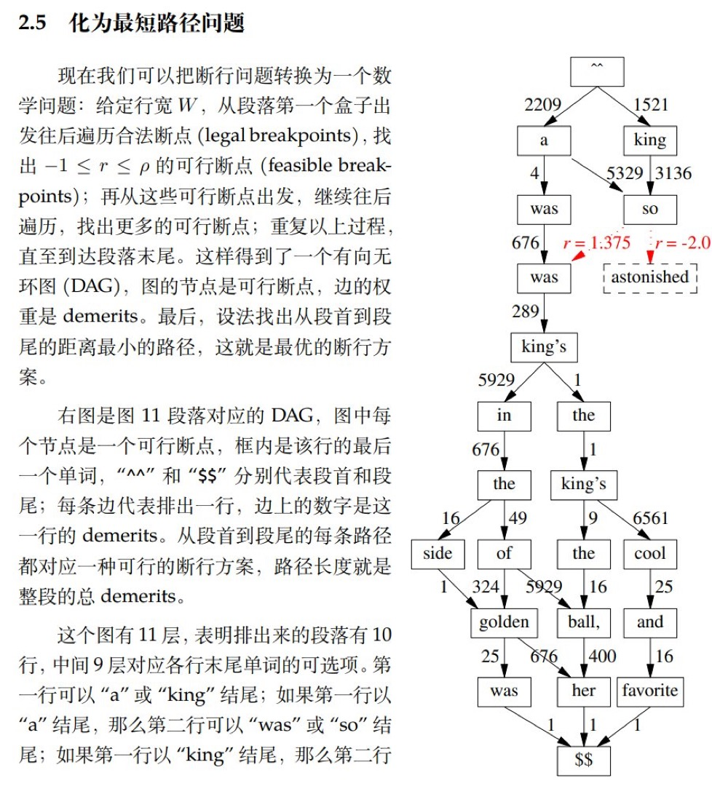
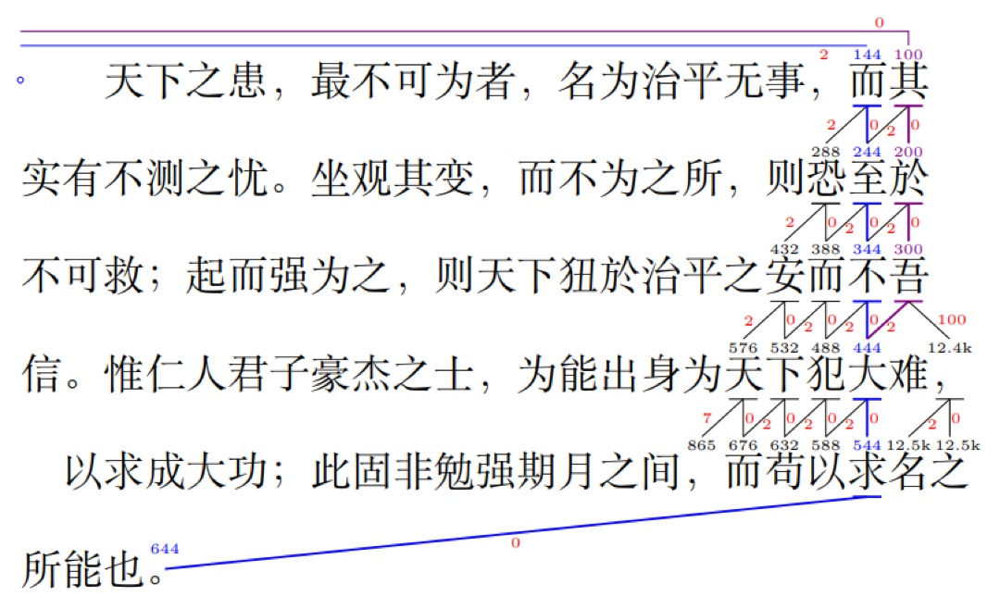
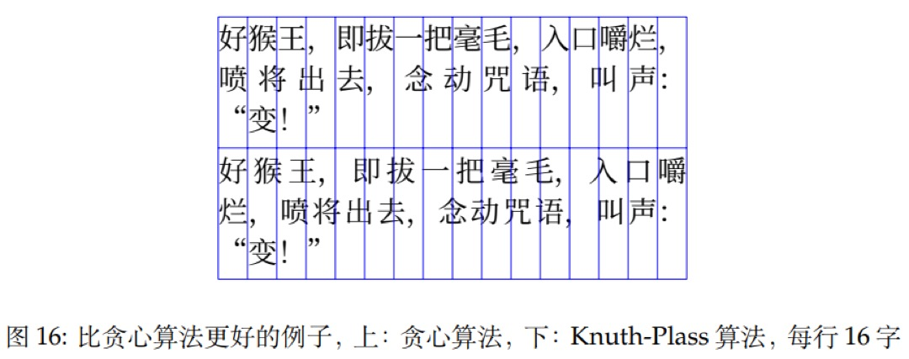
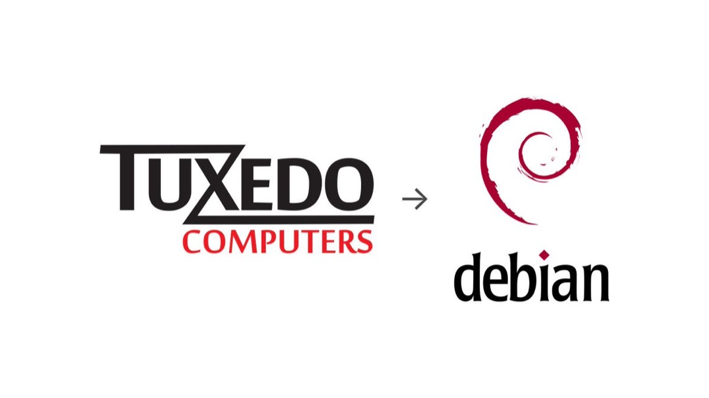

本期速览
02 LEANN 用压缩图结构省 97% 索引存储
04 T3 Code 与 Orca 的多 Agent 编排架构
06 Ardia 与 cua-driver 在 Mac 上实测领先浏览器工具
07 AgenticPPL 用命令 Token 反馈预测 Agent 能力
01｜TiDB 性能测试优于分库分表与 MySQL 单机
来源（X） · @plantegg · 2026-11-26 19:21
即使分库分表走拆分键跟TiDB对比的时候还是落了下风
有人知道TiDB是怎么做到的吗？
02｜LEANN 用压缩图结构省 97% 索引存储
来源（X） · @tantanyuli · 2026-11-27 00:04
LEANN 换了个玩法：不存全部嵌入向量，改存一份压缩后的图结构，检索时按需即时算，存储直接省下 97%，精度一点没掉。
笔记本上就能直接跑，给文件系统、电子邮件、浏览器记录、微信/iMessage、ChatGPT/Claude 对话、Slack/Twitter 实时数据还有代码仓库建索引，全程本地处理，不花云端钱，数据始终留在设备里。
项目已入选 MLsys 2026，既在意隐私又想用上语义搜索的个人开发者，这个真值得盯一眼。
🔗 ：https://github.com/StarTrail-org/LEANN
03｜Git 管理 Markdown 笔记在 2176 项测试中领先记忆产品
来源（X） · @kun70706 · 2026-11-27 00:30
一个用 git 管 Markdown 笔记的土办法拿了 98.5 分。
几款商业向量库和图数据库全落在后面，有一款新鲜度还 lag 了 162 秒。
写评测的人说，记忆这事拼的不是模型，是能不能原样找回。
小何看完把自己的记忆层换成了 git 笔记，半个月没再丢过上下文。
你现在用的记忆方案，找回过几次原话？
04｜T3 Code 与 Orca 的多 Agent 编排架构
来源（X） · @alswl · 2026-11-26 23:27
我的方案是写了一个小工具走 irc。
小巧够用，支持 Claude Code 和 Codex。
https://github.com/alswl/chatta
引用内容
meow @meow2149
同时拉起多个 Coding Agent 并不难，难的是让它们顺畅地委派任务、互相通信、交接上下文，并在出错后可靠恢复。
Codex、Claude Code、Pi、OpenCode 各自都有独立的会话、上下文和工具体系。最近拆解了 T3 Code 和 Orca 的源码，发现它们都是在这些工具之上架了一层 Agent Orchestration Layer（Agent 编排层），把原本单打独斗的 Agent 组织成一套协作系统。
目标一致，但两者的底层设计走了两条很有意思的路线。
1. 先分清两个核心角色：协调者与编排器
多 Agent 协作系统通常可以拆成两层：
- Coordinator（协调者）：本身往往也是 Agent，负责理解需求、拆解任务、指派执行者和验收结果。
- Orchestrator（编排器）：底层运行时，负责拉起 Agent、投递消息、维护状态、管理依赖和失败重试。
比如让 Claude Code 做架构设计，Codex 写实现，Pi 跑测试和审查。协调者决定怎么分工，编排器负责把这些决策稳稳落地。
2. T3 Code：MCP 委派 + 事件驱动
T3 Code 的思路偏向统一运行协议与状态管理，核心落在三个设计上：
任务委派：把协作包装成标准工具调用。它通过 Orchestrator MCP Server 暴露 delegate_task 工具，Claude Code 需要把子任务交给 Codex 时，直接调用工具指定目标 Agent、任务描述、角色、工作区隔离方式和执行模式即可。T3 Code 随即创建子线程，由 Provider Adapter 启动目标 Agent，并挂载到父线程的执行树下。整个过程支持异步，父 Agent 可以继续处理其他工作，也能主动等待结果。
状态与恢复：Orchestrator V2 采用事件驱动架构。任务委派、工具调用、执行结果和工作区检查点全部记录为事件，再配合数据库事务、Outbox 和状态投影，将状态持久化与外部执行解耦。客户端通过 WebSocket RPC 订阅状态变化，断线重连后也能无缝恢复进度。
上下文交接（Context Handoff）：T3 Code 把应用层会话 AppThread 和底层原生会话 ProviderThread 分开管理。假设前几轮由 Codex 完成，中途切到 Claude Code，之后又切回 Codex，系统可以直接恢复原有的 Codex 原生会话，只增量补充它漏掉的那段对话历史，避免每次切换都重传全量内容（当然，不同 Agent 内部的推理状态和 KV Cache 仍无法共享）。
3. Orca：CLI 协议 + 收件箱通信
相比之下，Orca 的重心放在任务调度与 Agent 间通信上：
调度方式：通过 orchestration Skill 教会 Agent 使用一套 CLI 协议，涵盖创建任务、启动 Worker、发消息、查状态和汇报结果。比如启动 Codex 执行一个已登记的任务，只需运行：
orca orchestration worker-start --task "$TASK_ID" --worktree current --agent codex
这条命令交由 Orca Runtime 处理，Agent 本身无需关心其他 Agent 的启动细节。
跨 Agent 通信：内置一套 Mailbox（收件箱）机制。执行中卡住用 ask 向协调者提问，协调者用 reply 回复，做完后 Worker 发 worker_done 汇报结果。这些结构化消息持久化到 SQLite，由 Runtime 负责投递并唤醒接收方。
任务模型与防冲突：Orca 把一次协作拆成四个核心实体：Run（完整协作过程）、Task（具体任务及依赖）、Dispatch（一次实际派工）和 Worker（执行任务的 Agent）。把 Task 和 Dispatch 分开建模非常实用：如果某个 Agent 执行超时、协调者把任务重派给了新 Worker，哪怕旧 Agent 事后突然返回完成信号，系统也能靠 Dispatch ID 识别出过期回报，防止误改当前任务状态。
依赖编排：支持 DAG（有向无环图）任务依赖。前置任务全部完成后，Runtime 自动把下游任务标为 ready，交由协调者挑选合适的 Worker 接手。
4. 两条路线的差异与趋同
对比下来，两者的发力点很清晰：
- T3 Code 侧重统一 Agent 运行协议、会话管理、上下文交接和事件流。
- Orca 侧重任务依赖、派工隔离、结构化通信和 Worker 生命周期。
不过两者的能力也在互相靠拢。T3 Code 已有实验性的 TypeScript Workflow，Orca 也补上了跨 Agent 会话交接；两者也都通过 Git Worktree 隔离并行任务，减少多个 Agent 同时改代码带来的冲突。
5. 越来越像面向 Agent 的操作系统
套用操作系统的视角，这套编排架构的每一层几乎都能一一对应：
- Coding Agent → 进程
- Orchestrator → 进程调度器
- Mailbox → 进程间通信（IPC）
- Context Handoff → 会话上下文迁移
- Event Store → 状态持久化与恢复
- Git Worktree → 工作空间隔离
- Task DAG → 任务依赖管理
多 Agent 编排真正有门槛的从来不是并发数量，而是底层的分工、通信、等待、交接与容错，最终把分散的结果拼成一个可交付的项目。随着这些基础设施逐渐补齐，Coding Agent 管理工具也越来越像一套专门面向 Agent 的操作系统。

05｜mddog 在终端渲染 Markdown 页面
来源（X） · @QingQ77 · 2026-11-26 23:26
https://github.com/qu8n/mddog

06｜Ardia 与 cua-driver 在 Mac 上实测领先浏览器工具
来源（X） · @mvanhorn · 2026-11-26 23:24
中文译文
我新文章的TL;DR：我在一台Apple Silicon Mac上测试了16个agent浏览器和computer-use工具，这样我在@t3dotcodes里的agent就不会再把工作交还给我。以下是哪些胜出，以及我切换到了什么。
两个浏览器赢家在GitHub上几乎无人知晓（@ardiabrowser 3k星，@opencode browse 1.1k星），但它们在速度、RAM和token上击败了54k星的agent-browser和26k星的Stagehand。与此同时，@trycua静静坐在32.9k星的位置，支撑着本次测试中的五个独立技术栈。
🏆 换浏览器（我做的选择）：@ardiabrowser + @trycua。最快的热加载（396 ms），零Chrome 144 Allow弹窗，零调试信息栏，内置提示注入防护栏，以及完整的1Password + Touch ID Passkeys（由@barre_of_lube、@shivamhwp、@francedot、@ddupont808构建；提示来自@theo、@McKamyk）
🌐 留在Chrome：@anomalyco的@opencode browse + @trycua。通过一个Chrome扩展配对一次，这样你就永远关掉远程调试，使用18 MB RAM，页面快照比Stagehand减少53倍，比agent-browser减少5倍，浏览器控制干净地叠在上面（@thdxr、@jayair、@fanjiewang、@adamdotdev、@ryanvogel、@rekram11、@sethrose；提示来自@garywoodsX）
💻 原生Mac应用：cua-driver以27 MB RAM和零焦点抢占胜出（Messages上597 ms，Electron上129 ms），使用的RAM比旧Mac工具少8倍。测试中的五个技术栈在底层都汇聚到它上面：本地cua-driver、@boatdotdev、@ardiabrowser、pi-kit和@t3dotcodes（@AniC_dev、@wolfmanfx、@theo）
🔐 额外设置：通过Touch ID把1Password CLI接到@t3dotcodes，这样agent只需一次指纹轻触就能请求密钥，而不是存储明文密钥
☁️ 云agent工厂：@boatdotdev以中位数1.9秒启动4个Ubuntu VM，成本$0.001，在隔离云运行方面排名第一。Codex Terra的原生浏览器在T3 Code内失败，因为它的宿主管道只存在于Codex桌面应用中（提示来自@babyak）
🧬 重复工作时跳过像素：MIT和@reatools表明，将桌面二进制逆向工程为MCP可使FreeCAD快55倍、token少35倍，这与Printing Press是同一思路，只是扩展到了桌面应用（@ao_qu18465、@morluto）
唯一的问题：如果你留在Chrome里用OpenCode browse，当agent标签页打开时Chrome会显示一个临时调试栏（可用一个启动标志隐藏；Ardia原生修补掉了它）。
感谢线程里所有为我指出赢家的人：@theo、@garywoodsX、@altryne、@ericlitman、@siraustin、@_JDRA1、@rdylina、@McKamyk、@sethrose、@babyak和@wolfmanfx。
文章中有完整的16工具记分板、图表，以及两个技术栈的可复制粘贴设置提示。
原文
TL;DR of my new article: I tested 16 agent browser and computer-use tools on one Apple Silicon Mac so my agents in @t3dotcodes stop handing work back to me. Here is what won and what I switched to.
The two browser winners are almost unknown on GitHub (3k stars for @ardiabrowser, 1.1k for @opencode browse), yet they beat 54k-star agent-browser and 26k-star Stagehand on speed, RAM, and tokens. Meanwhile @trycua sits quietly at 32.9k stars powering five separate stacks in this test.
🏆 Switch browsers (what I did): @ardiabrowser + @trycua. Fastest warm loads (396 ms), zero Chrome 144 Allow popups, zero debugging infobar, built-in prompt-injection fences, and full 1Password + Touch ID Passkeys (built by @barre_of_lube, @shivamhwp, @francedot, @ddupont808; tip via @theo, @McKamyk)
🌐 Stay in Chrome: @opencode browse by @anomalyco + @trycua. Pairs once over a Chrome extension so you turn remote debugging off forever, uses 18 MB RAM, and cuts page snapshots 53x vs Stagehand and 5x vs agent-browser, with browser-control layering cleanly on top (@thdxr, @jayair, @fanjiewang, @adamdotdev, @ryanvogel, @rekram11, @sethrose; tip via @garywoodsX)
💻 Native Mac apps: cua-driver won at 27 MB RAM and zero focus steal (597 ms on Messages, 129 ms on Electron), using 8x less RAM than older Mac tools. Five stacks in the test converged on it underneath: local cua-driver, @boatdotdev, @ardiabrowser, pi-kit, and @t3dotcodes (@AniC_dev, @wolfmanfx, @theo)
🔐 Bonus setup: wired the 1Password CLI to @t3dotcodes over Touch ID so agents ask for secrets with one fingerprint tap instead of storing plaintext keys
☁️ Cloud agent factories: @boatdotdev booted 4 Ubuntu VMs in 1.9s median for $0.001, #1 for isolated cloud runs. Codex Terra's native browser fails inside T3 Code because its host pipe only lives in the Codex desktop app (tip via @babyak)
🧬 Skip pixels on repeat work: MIT and @reatools showed reverse-engineering desktop binaries into MCPs makes FreeCAD 55x faster with 35x fewer tokens, the same idea as Printing Press extended to desktop apps (@ao_qu18465, @morluto)
Only catch: if you stay in Chrome with OpenCode browse, Chrome shows a temporary debugging bar while an agent tab is open (hideable with one launch flag; Ardia patches it out natively).
Shoutout to everyone on the thread who pointed me to the winners: @theo, @garywoodsX, @altryne, @ericlitman, @siraustin, @_JDRA1, @rdylina, @McKamyk, @sethrose, @babyak, and @wolfmanfx.
Full 16-tool scoreboard, charts, and copy-paste setup prompts for both stacks in the article.
引用内容
Matt Van Horn @mvanhorn
中文译文
原文
07｜AgenticPPL 用命令 Token 反馈预测 Agent 能力
来源（X） · @amandaH_333 · 2026-11-26 21:05
中文译文
今日阅读："Perplexity is intelligence"——当你问：在什么上的perplexity？
教训不是"跑更多eval"。而是：哪些token的反馈真正算数。训练也是如此——不是更多反馈，而是驱动能力的那薄薄一层。
原文
Today's reading : "Perplexity is intelligence" — when you ask: perplexity on what?
The lesson isn’t “run more evals.” It’s: which tokens’ feedback actually counts. Same for training — not more feedback, the thin slice that drives ability.
引用内容
Wenhao Chai @wenhaocha1
中文译文
感恩节博客：Perplexity（在什么上？）就是智能 🌟
正如OpenAI所说，perplexity就是智能，那么agent轨迹上的perplexity能衡量agentic能力吗？
我们发现不能。整条轨迹的perplexity在Terminal-Bench 2.1上把模型排名排反了。
但在0.3%的字节上，perplexity能得到正确排名，而这些正是agent读完终端后紧接着写下的命令token。
我们称之为AgenticPPL，灵感来自LongPPL。感恩节快乐！
博客：http://wenhaochai.com/blogs/agentic-ppl.html
原文
Thanksgiving Blog: Perplexity (on what?) is intelligence 🌟
perplexity is intelligence as OpenAI said, so does perplexity on agent trajectories measure agentic ability?
we found it does not. whole traj perplexity ranks models backwards on Terminal-Bench 2.1.
but on 0.3% of the bytes, perplexity gets the ranking right, and they're the command tokens an agent writes right after reading the terminal.
we call it AgenticPPL, inspired by LongPPL. happy thanksgiving!
Blog: http://wenhaochai.com/blogs/agentic-ppl.html

08｜Crossplane 在 kind 集群构建平台 API
来源（X） · @K8sArchitect · 2026-11-26 23:21
中文译文
本教程逐步演示如何在本地kind集群上构建Crossplane平台API，用XRD和composition为InfluxDB provider建模，并在composition失败时进行调试
➤ https://ku.bz/msSlqDZKr
原文
This tutorial walks through building a Crossplane platform API on a local kind cluster, modelling an InfluxDB provider with XRDs and compositions, and debugging the composition when it fails
➤ https://ku.bz/msSlqDZKr

09｜Knuth-Plass 断行算法详解与 Python 实验
来源（X） · @bnu_chenshuo · 2026-11-26 16:31
TeX 为什么能排出疏密均匀的段落？因为它不逐行贪心，而是把整段断行化成一个最短路径问题，用动态规划求全局最优。
PDF https://github.com/chenshuo/typeset/blob/master/knuth-plass-line-breaking.pdf




10｜TUXEDO OS 因质量推迟至 2027 年
来源（X） · @sysxplore · 2026-11-26 22:52
中文译文
TUXEDO正在推迟其转向基于Debian的TUXEDO OS的计划，称新系统还不够好，尚不能发布。
最终版本原定今年发布，现在要到2027年才到来。
该公司表示，当前构建未达到它能为客户背书的质量水平，而一个预装在其笔记本电脑上并维护多年的系统必须在每一个受支持的型号上可靠运行。
它对延迟的座右铭是："质量先于截止日期。"
于8月在Debian Testing上启动的公开测试版持续获得定期更新和新的ISO镜像。
原文
TUXEDO is delaying its move to a Debian-based TUXEDO OS, saying the new system isn't good enough to ship yet.
The final release was due this year and now arrives in 2027.
The company says the current builds don't meet the quality level it can stand behind for its customers, and a system it ships on its laptops and maintains for years has to run reliably on every supported model.
Its motto for the delay: "Quality before deadline."
The open beta, launched in August on Debian Testing, keeps getting regular updates and new ISO images.
